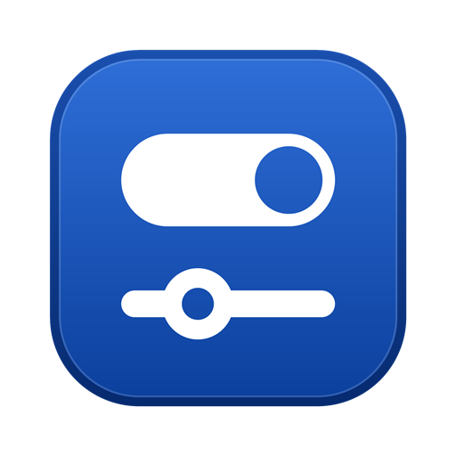
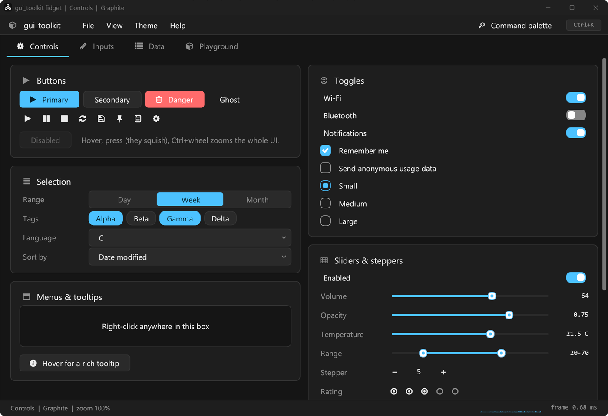
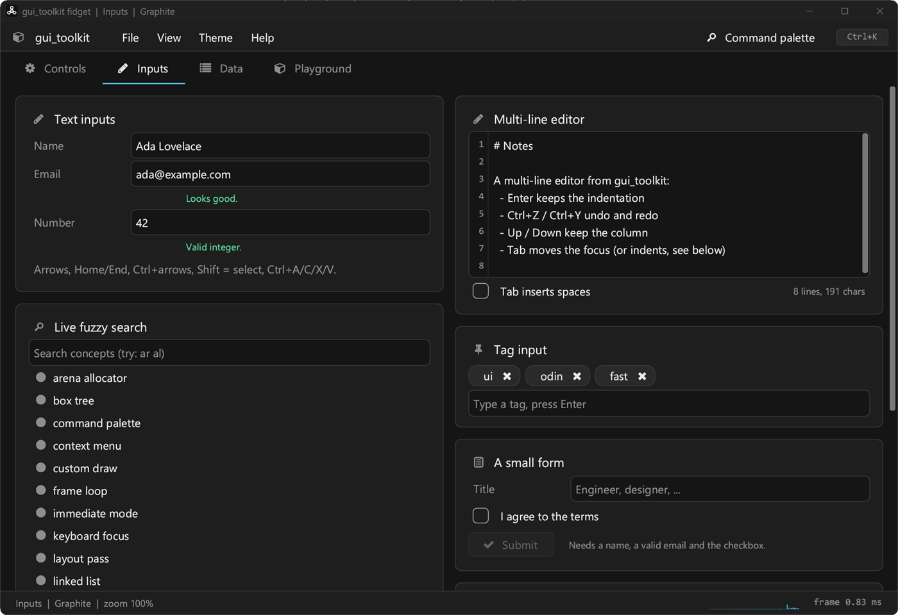
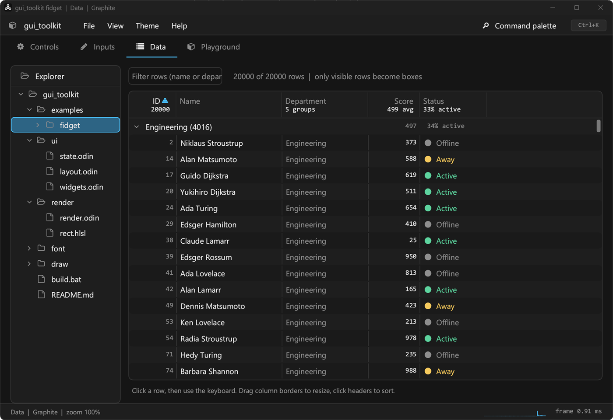
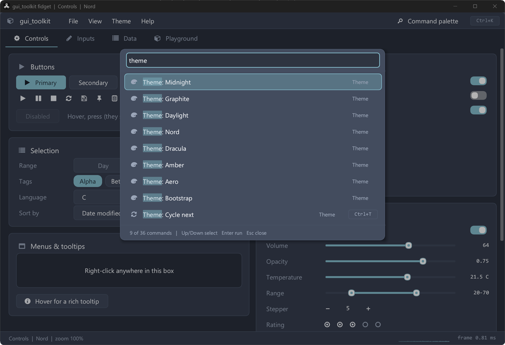
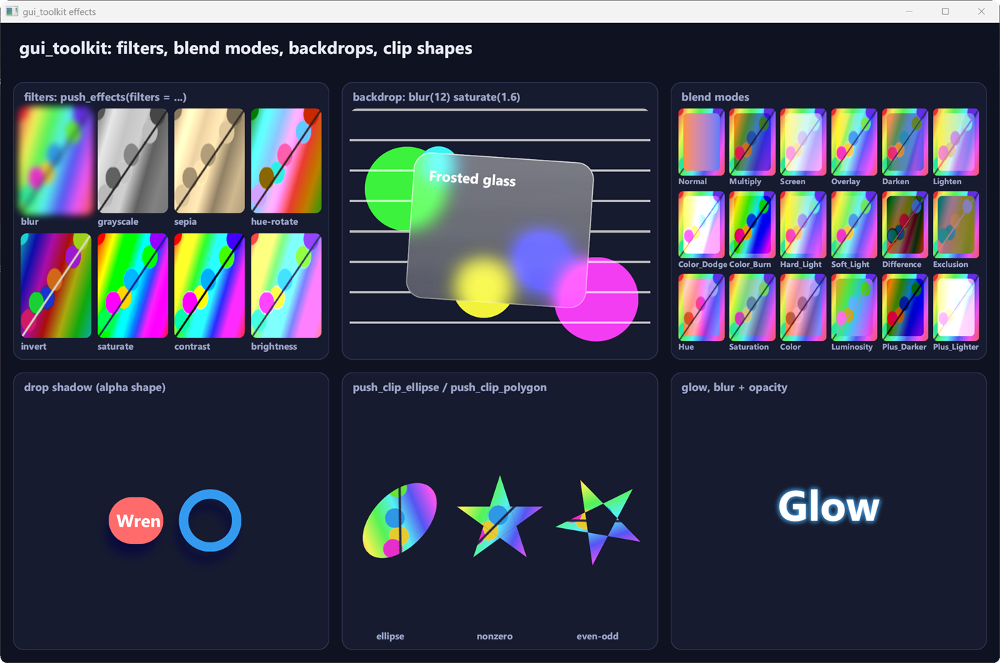
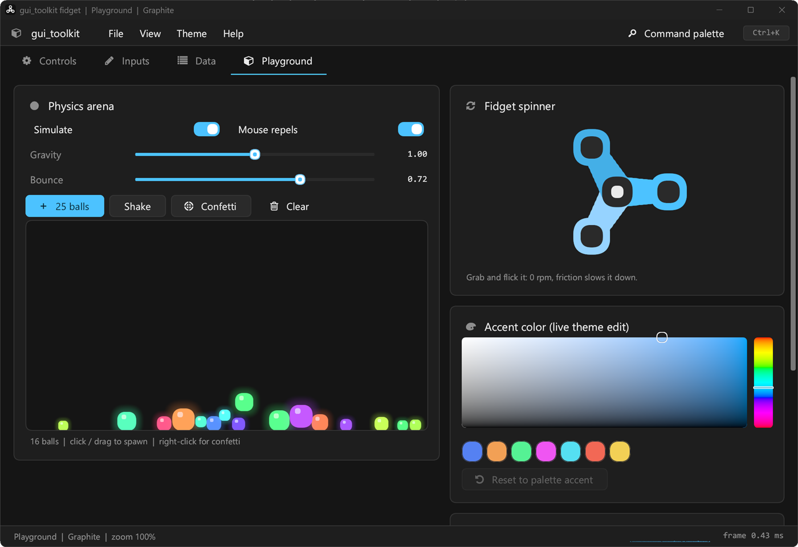
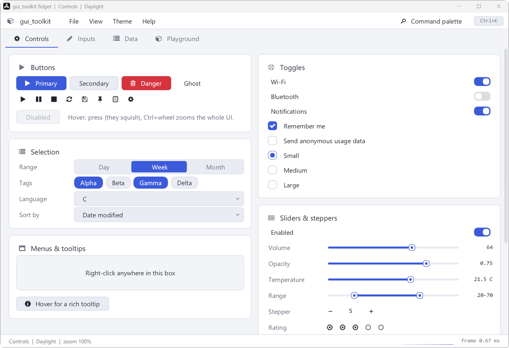

Immediate mode, retained state
Build the interface every frame with plain procedures; boxes keep their state by key: animations, scroll, focus, text fields. Size kinds, signals and tag-based themes, after the RAD Debugger's UI layers.

gui_toolkitA fast, native, immediate-mode GUI toolkit in Odin. A retained-state immediate-mode UI over its own renderer: Direct3D 11, or WebGPU (Direct3D 12 on Windows, Vulkan on Linux).
Windows 10+ · Linux (X11, Wayland) · MIT

Build the interface every frame with plain procedures; boxes keep their state by key: animations, scroll, focus, text fields. Size kinds, signals and tag-based themes, after the RAD Debugger's UI layers.
Rounded rects, shadows, gradients, blurs and backdrops, masks, layers, transforms, Slug text from outlines (hinted when small), video; Direct3D 11 or WebGPU, damage tracking and a frame pacing model that never stretches a resize.
DirectWrite on Windows, or the native backend everywhere (Fontations, HarfRust, ICU4X): shaping, bidi, grapheme clusters, line breaking, colour emoji (COLR v1), fallback fonts.
Fields and editors (wrapped, highlighted, secret), menus, pickers with fuzzy matching, virtualized tables and trees, splitters, tabs, dialogs, toasts, popovers, charts, drag and drop, find in page.
Integrated title bars with snap layouts, DPI, IME, clipboard, file dialogs, tray icons, single instance, accessibility through AccessKit; X11 and Wayland on Linux.
Windowless tests with pixel comparisons on WARP, every package through the WebGPU backend, a Linux job; pinned dependencies (Odin, crates, wgpu-native) by SHA-256. A whole program is driven end to end over the Chrome DevTools Protocol, which Puppeteer, Playwright and your own scripts can use too: clicks, keys, screenshots, the accessibility tree, without touching the mouse. A run can be kept as a timeline, a page with a picture per action and every frame's time, then played back and compared. Chrome's own DevTools attach to a window: its boxes in Elements, their styles and colours edited live, what a screen reader gets for each.






Add it to your project and point a collection at it; examples/hello is a window in a few lines.
odin build src -collection:gt=ext/gui_toolkit
opencode native, a desktop client for opencode (Windows and Linux), and Wren, a web browser.